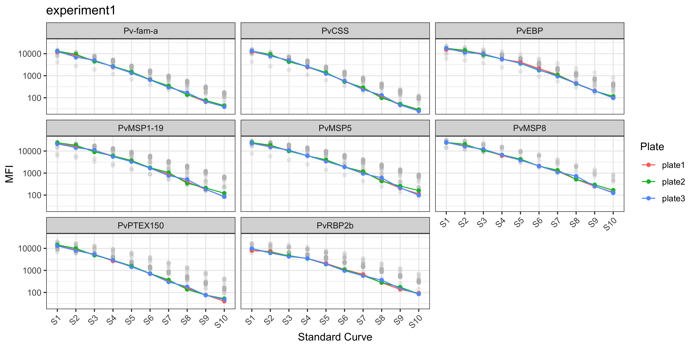
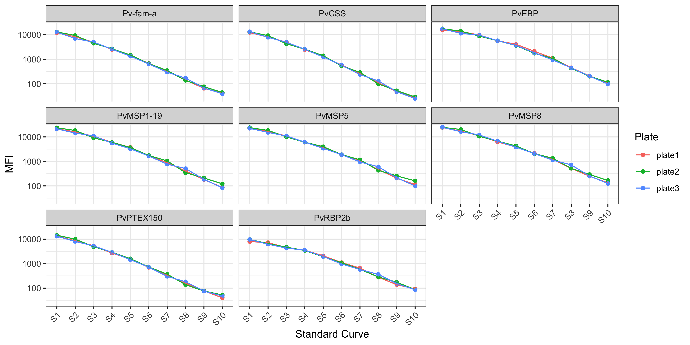

library(SeroTrackR)
library(tidyverse)
your_raw_data <- c(
system.file("extdata", "example_MAGPIX_plate1.csv", package = "SeroTrackR"),
system.file("extdata", "example_MAGPIX_plate2.csv", package = "SeroTrackR"),
system.file("extdata", "example_MAGPIX_plate3.csv", package = "SeroTrackR")
)
your_plate_layout <- system.file("extdata", "example_platelayout_1.xlsx", package = "SeroTrackR")
sero_data <- readSeroData(
raw_data = your_raw_data,
platform = "magpix", # default
version = "4.2" # default
)
plate_list <- readPlateLayout(
plate_layout = your_plate_layout,
sero_data = sero_data
)4 Explore Standard Curves
This tutorial is focussed on how to interrogate standard curves and compare different standard curves from multiple runs.
4.1 Setup
4.2 Standard Curves
The plotStds() function plots the standard curve, generated from the antibody data from the standards you indicated in your plate layout (e.g. S1-S10) and Median Fluorescent Intensity (MFI) units are displayed in log10-adjusted scale.
Important
For your standard curve, if you have pooled positive control plasma from highly immune adults from:
- Papua New Guinea (PNG): write
location = "PNG" - Ethiopia (ETH): write
location = "ETH".
Note
Note that the grey dots in the background indicate the standard curve range observed at WEHI for PNG or Ethiopian samples where there are known differences in the standard curve.
plotStds(sero_data, location = "PNG", experiment_name = "experiment1")
#> Warning in ggplot2::geom_point(data = stds_1, aes(x = Sample, y = MFI, color =
#> Plate, : Ignoring unknown aesthetics: text
#> Warning: Removed 250 rows containing missing values or values outside the scale range
#> (`geom_point()`).
In the case of the PvSeroTAT multi-antigen panel, the antigens will be displayed and in general your standard curves should look relatively linear (only when the y-axis is on log-adjusted scale).
4.3 Manually Plot Standard Curves
You can also plot the standard curve using ggplot2 and customise however you wish.
# stratify data
master_file <- sero_data
stds <- master_file$stds
# relabel antigen names from lab codes to proper antigen names
old_names <- c("EBP", "LF005", "LF010", "LF016", "MSP8", "RBP2b.P87", "PTEX150", "PvCSS")
new_names <- c("PvEBP", "Pv-fam-a", "PvMSP5", "PvMSP1-19", "PvMSP8", "PvRBP2b", "PvPTEX150", "PvCSS")
name_lookup <- setNames(new_names, old_names)
stds_1 <- stds %>%
select(-Location) %>%
pivot_longer(-c(Sample, Plate), names_to = "Antigen", values_to = "MFI") %>%
mutate(
Plate = factor(Plate, levels = unique(Plate[order(as.numeric(str_extract(Plate, "\\d+")))])), # reorder by plate number
Sample = factor(Sample, levels = unique(Sample[order(as.numeric(str_extract(Sample, "\\d+")))])), #reorder by Standard number
Antigen = dplyr::recode(Antigen, !!!name_lookup),
MFI = as.numeric(MFI)
)
stds_1 %>%
ggplot() +
geom_point(aes(x = Sample, y = MFI, color = Plate, group = Plate)) +
geom_line(data = stds_1, aes(x = Sample, y = MFI, color = Plate, group = Plate)) +
scale_y_log10(breaks = c(0, 10, 100, 1000, 10000)) +
labs(
x = "Standard Curve",
y = "MFI"
) +
facet_wrap(~Antigen) +
theme_bw() +
theme(axis.text.x = element_text(angle = 45, hjust = 1))
4.4 Customisations
For more customisations on how to manipulate your ggplot2 see the manual here or the book (Wickham 2016).